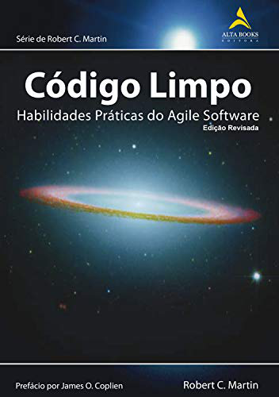

Bem vind@, se você está aqui é porque você é um(a) programador(a) ou aspira ser.
Tendo isso em vista,
nós os estudantes
Samuel Almeida
e
Wyllian Asevedo
do curso de Licenciatura em Ciência da Computação
do campus IV da Universidade Federal da Paraíba criamos este ambiente para compartilharmos o que
aprendemos sobre boas práticas de programação, utilizando conceitos e exemplos do livro
Código Limpo: Habilidades Práticas do Agile Software do autor Robert C. Martin.

Quando se começa a aprender programação é mais do que comum escrevermos nossos códigos de uma forma
que só faça sentido na nossa cabeça naquele momento e se outra pessoa tentar entender esse mesmo
código vai ter dificuldades ou até mesmo não vai compreender nada do que foi escrito.
Então, para evitar esse tipo de dificuldade de entendimento, existem algumas regras e padrões de
programação e algumas delas estão elencadas no livro Código Limpo.
Devemos lembrar que somos autores dos códigos que escrevemos e, assim como em um livro, teremos leitores!
De fato, passamos mais tempo lendo códigos do que escrevendo-os, portanto, lembre-se disso e seja um bom
autor e escreva seu código de uma maneira que seja fácil de ler e entender.